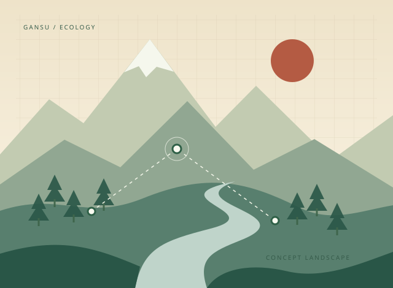
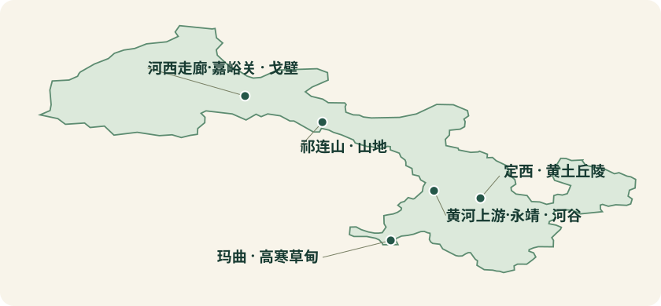

LORA · 通信与能源分析
先算山河面向复杂地形生态监测的 LoRa 链路与节点续航仿真平台
基于真实地形数据，开展无线链路预算、通视分析和整机能耗评估，为复杂地形下的生态监测节点部署提供前期分析依据。
软件仿真，非实地测量

功能概览
面向生态监测节点部署，结合通信链路、地形与能源条件评估方案；结果为理论计算和软件仿真。
甘肃五案例概览
案例起点的相对位置。省级轮廓为简化示意。

省级轮廓数据来源：geoBoundaries。
LORA · 通信与能源分析
基于真实地形数据，开展无线链路预算、通视分析和整机能耗评估，为复杂地形下的生态监测节点部署提供前期分析依据。
软件仿真，非实地测量

面向生态监测节点部署，结合通信链路、地形与能源条件评估方案；结果为理论计算和软件仿真。
案例起点的相对位置。省级轮廓为简化示意。

省级轮廓数据来源：geoBoundaries。